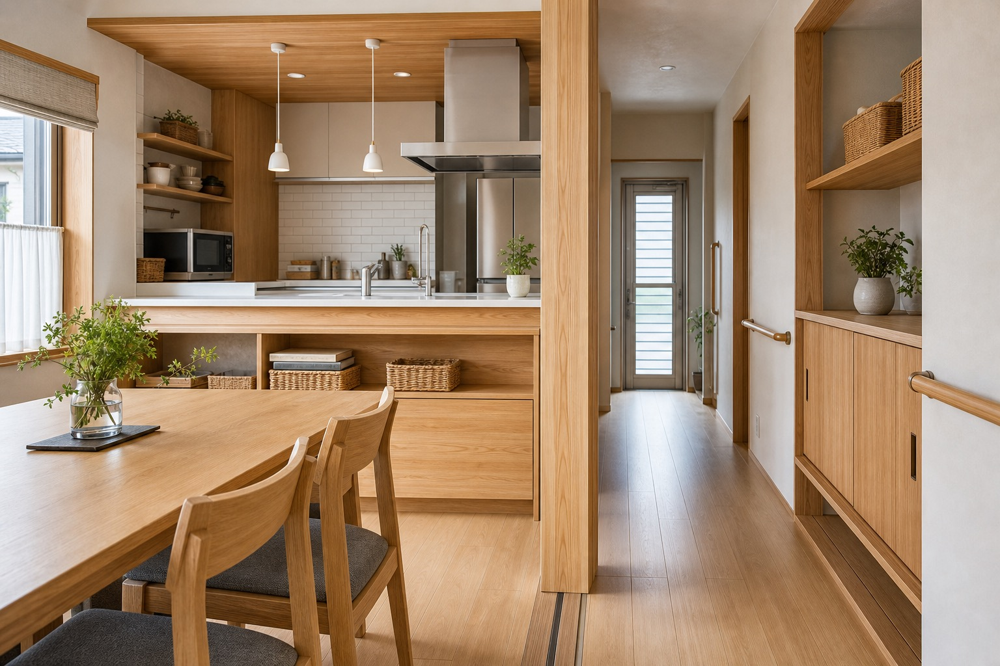
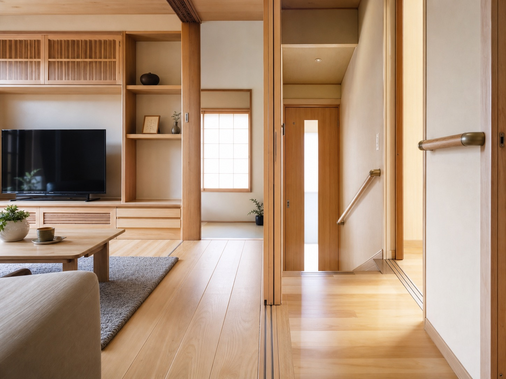
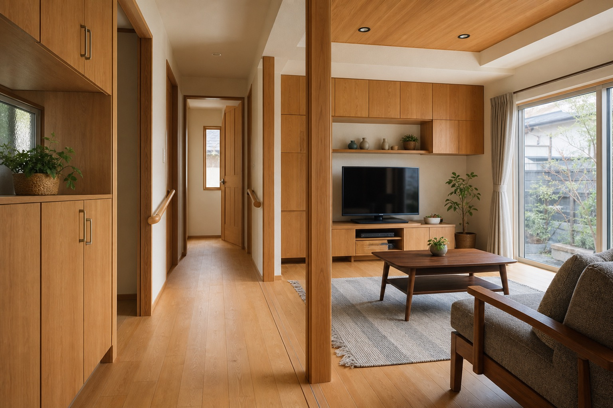
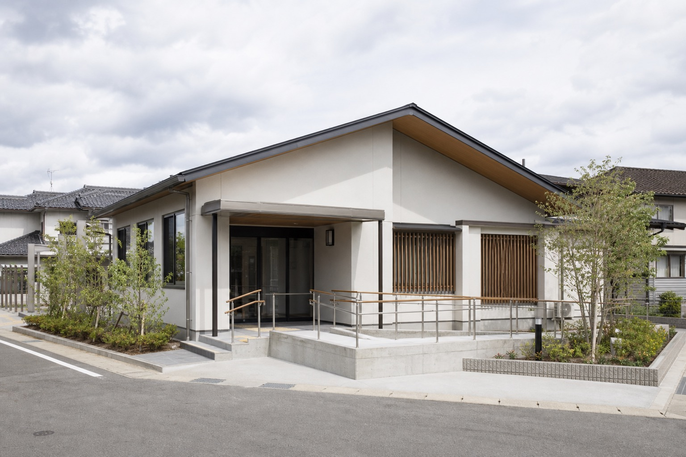
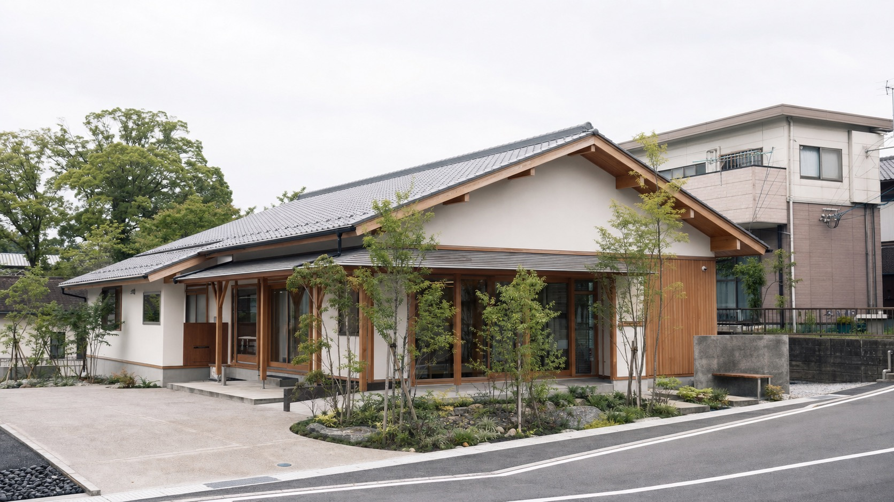

新築工事
既存サイトに「新築も致しております」と記載。公共・福祉施設、寺院関連、宿舎などの掲載工事があります。

仮画像Kitakyushu / Established 1952
北九州市小倉北区を拠点に、新築・増改築・バリアフリー工事まで。長く地域の建築に関わってきた工務店の姿勢を、いま伝わる形へ。
Renewal Direction
既存サイトから読み取れる佐々木工務店の軸は、昭和27年から続く実績、公共性の高い建築、増改築やバリアフリー工事への対応です。
今回のデモでは、派手な住宅LPではなく、工務店としての堅実さと施工写真が引き立つ設計にしています。事実情報は既存サイト掲載内容に限定し、未確認情報は要確認として扱います。

Service
既存HPで確認できる内容をもとに整理しています。詳細な対応範囲・営業時間・対応エリアは公開前に確認が必要です。
既存サイトに「新築も致しております」と記載。公共・福祉施設、寺院関連、宿舎などの掲載工事があります。
トップページに「増改築工事を主体」と記載。住まい・施設の使い勝手を整える相談導線を強めています。
施工写真に段差解消、手すり、浴室まわりの事例説明を確認。見せ方を現代的に再編集しています。
特定建設業許可、一級建築士事務所の記載を確認。許可番号の最新性は要確認です。
Reason
Works Direction
下記は仮画像です。公開時は既存サイト掲載の実写真または新規撮影写真へ差し替える想定です。

仮画像
仮画像
仮画像Consultation
既存サイトにはメールフォームと電話・FAXがありました。デモでは、電話・メール・フォームの入口を整理し、初めての人でも相談内容を選びやすい形にしています。
Company
Contact Demo
電話・メール・フォームの入口を整理した提案用サンプルです。実装時は送信先、個人情報保護方針、営業時間表記を確認してください。
093-581-4812